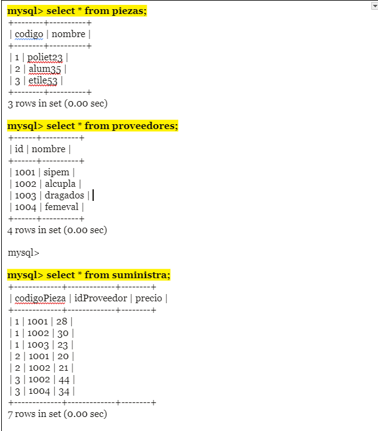
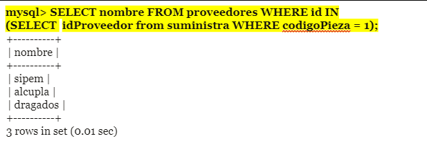

Exposición Consultas Multitabla y Subconsultas
Ingeniería en Sistemas
Consultas Multitabla
* Composiciones internas
* Composiciones externas
Introducción
Las consultas multitabla en MySQL son una herramienta poderosa que te permite acceder y combinar datos de dos o más tablas en una sola consulta. Esto te da la flexibilidad de obtener información completa y compleja de tu base de datos, en lugar de limitarte a una sola tabla.
Composiciones internas
Las Composiciones internas son aquellas que parten de un producto cartesiano entre dos tablas, es decir, la combinación de todas las filas de una tabla con las filas de la otra tabla. A partir de ese producto cartesiano de tablas, se pueden hacer filtros o restricciones al resultado.
SELECT … FROM tabla1 JOIN tabla2 ;
Para realizar el producto cartesiano de 2 tablas usamos el comando JOIN que puede ser sustituido en MySQL por la coma(,)

Composiciones externas
Las Composiciones externas no se originan de un producto cartesiano sino que se toma un registro de una tabla y se busca registros de otra tabla que coincidan en el atributo indicado.
subconsultas
¿Qué es una subconsulta?
Es una consulta dentro de otra consulta (a esta segunda la llamamos la principal). Se suelen colocar en la cláusula WHERE de la consulta principal, pero también pueden añadirse en el SELECT o en el FROM.
Clausula WHERE
Para una subconsulta situada en la cláusula WHERE puede usarse los operadores de comparación (> , >=, <, <=, !=, =). Cuando esto ocurre se realiza una comparación entre el valor indicado de la consulta principal y el valor resultante de la subconsulta.
Comandos especiales: ANY
Compara cada registro de la consulta principal con los de la subconsulta. Si la comparación entre un registro de la consulta principal con otro de la subconsulta se valida, el registro de la principal pasará el filtro.
Comandos especiales: ALL
en este caso un registro debe validarse para todos los registros de la subconsulta.
Comandos especiales: IN y NOT IN
En este caso no se usa el comparador. Se comprueba si cada registro de la consulta principal está o no contenido en la tabla resultante de la subconsulta, para NOT IN nos dice que solamente es el proceso inverso de el IN es decir solamente es su opuesto.
EJEMPLOS

EJEMPLOS
